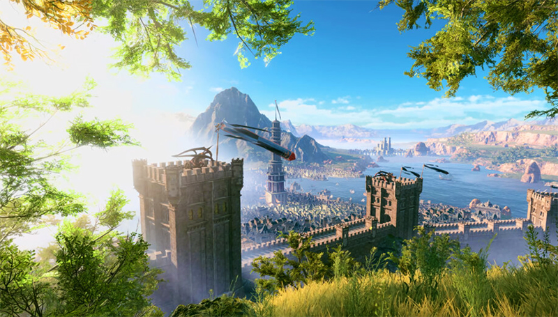
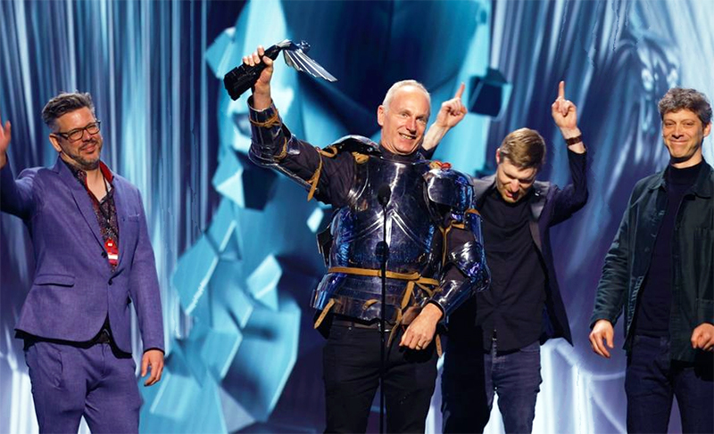
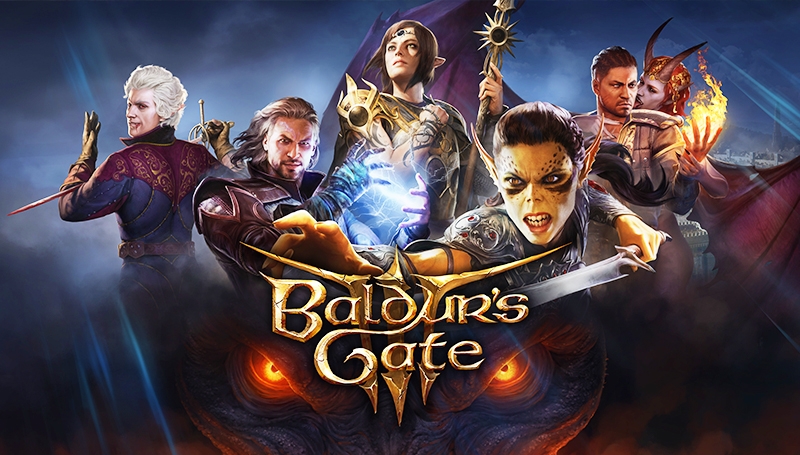

Good morning and welcome to Baldur's Guide, the ultimate destination for mastering Baldur's Gate III. Whether you've already explored Faerun, or you're just about to embark on your journey, you've come to the right place
Larian Studios has crafted a masterpiece in the world of role-playing games with Baldur's Gate III. It's not just a game, but an immersive odyssey through the Forgotten Realms, where every choice shapes your destiny. As you delve into your adventure, prepare to be swept away by a world of boundless possibilities.
The quality and depth of Baldur's Gate III is unparalleled, a fact recognized by numerous accolades from The 2023 Game Awards and The Golden Joystick Awards to the Webby Awards, the Streamer Awards, and many more. These honors speak volumes about the game's brilliance and the dedication of Larian Studios to delivering an unforgettable experience.
One of the most remarkable aspects of Baldur's Gate III is its dynamic storytelling. Every decision you make, every action you take, shapes the world around you and determines the outcome of your journey. With a multitude of choices and consequences, no two playthroughs are the same. It's this element of unpredictability that keeps players coming back for more, eager to uncover every secret the game holds.
But with great freedom comes great responsibility, and navigating the vast expanse of Baldur's Gate 3 can be a daunting task. Fear not, for Baldur's Guide is here to help you every step of the way. Whether you're struggling to choose the perfect character build, seeking strategies for challenging encounters, or simply looking for tips to enhance your gameplay experience, the guides and tutorials you'll find in this website are sure to help.
So, whether you're a seasoned adventurer or a newcomer to the game, join us on this extraordinary journey. With the tips and tricks you'll find here, you can unlock the secrets of Baldur's Gate and forge your own epic journey.